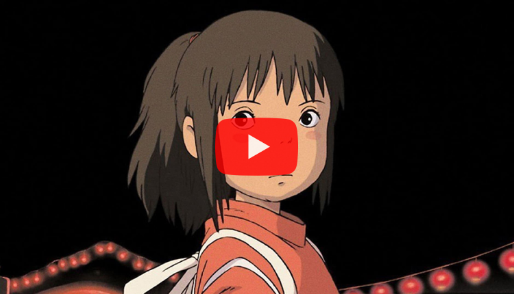
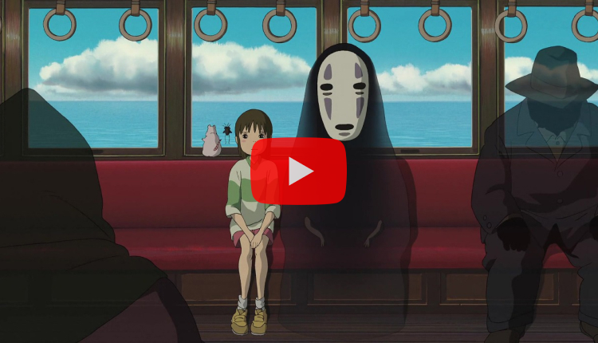
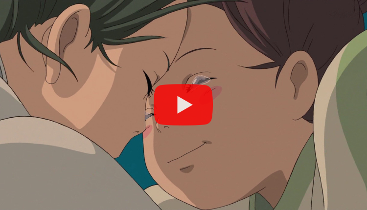
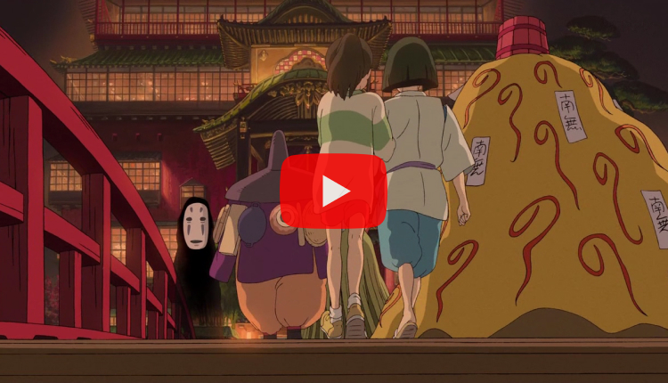

TRAILER
TRAILER
극장 애니메이션 '센과 치히로의 행방불명'은 다른 나라처럼 한국에서도 크게 흥행해 당시 일본 애니메이션으로서는 국내 최고 흥행작이 되었다. 최종적으로 서울 관객 90만 명, 전국 200만이 넘는 관객을 불러모았고 1,138만 달러의 수입을 얻었는데, 이는 일본 다음으로 세계 흥행 2위의 수치다. 종전에 개봉한 일본 영화와 애니메이션들이 줄줄이 참패하던 한국 극장가에서 주목할 만한 성과라 할 수 있다.
-
'센과 치히로의 행방불명' 재개봉 예고편 (2015)
- '센과 치히로의 행방불명' 재개봉 예고편 (2015)
- 앞서 개봉한 영화에 역대적인 흥행에 힘입어 지난 2015년 국내에 재개봉하였다. 재개봉판은 16여만 명의 관객을 동원하며 재개봉 영화 흥행으로서도 매우 성공했다.
-
'센과 치히로의 행방불명' 공식 예고편 (2001)
- '센과 치히로의 행방불명' 공식 예고편 (2001)
- 무려 20년간 일본 영화 역대 흥행 1위를 기록한 초메가히트작으로, 흥행 성적면에서 스튜디오 지브리의 전성기를 보여줬다고도 할 수 있는 작품이기도 하다.
-
'센과 치히로의 행방불명' Scene #01
- '센과 치히로의 행방불명' Scene #01
- 센과 치히로의 행방불명의 장면 중 치히로가 하쿠의 잊어버린 이름을 되찾아주어 서로의 소중한 이름을 되뇌이는 장면이다.
-
'센과 치히로의 행방불명' Scene #02
- '센과 치히로의 행방불명' Scene #02
- 센과 치히로의 행방불명의 장면 중 치히로가 하쿠와 동행하며 숨을 참고 몰래 여관에 잠입하는 장면이다.